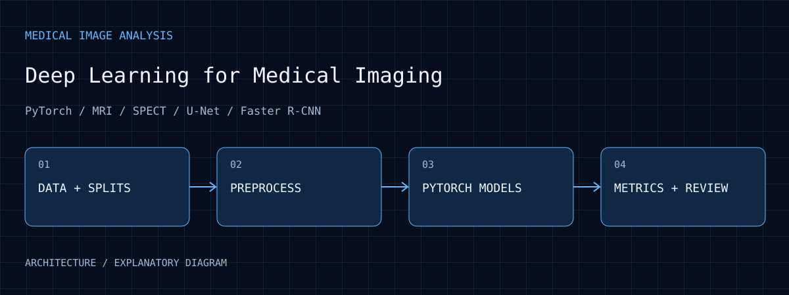
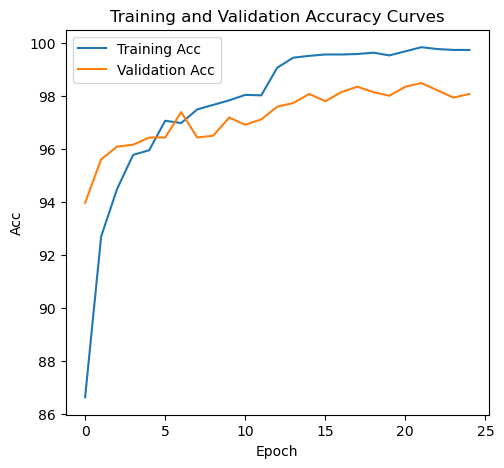
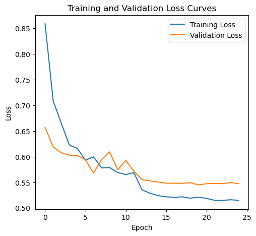

Digit classification
Archived epoch-25 validation accuracy is 98.08% and macro-F1 97.87%; these are not independent test-set results.
Deep Learning for Medical Imaging
Five assignments covering SPECT and MRI classification, carotid ultrasound segmentation, and chest X-ray abnormality detection, with preprocessing, PyTorch models, training results, and analysis. Public code and aggregate figures; no patient data.

01 / PURPOSE
Explore how classification, segmentation, and object detection address different medical-imaging tasks.
02 / ARCHITECTURE
Five assignments cover digits, SPECT/MRI, ultrasound and X-rays across classification, segmentation and detection.
Task-specific handling covers slices, volumes, images and annotations, with attention to split units.
Work includes MLPs, transfer-learning classifiers, U-Net/FCN and Faster R-CNN.
Accuracy, macro-F1, IoU/Dice and AP answer different questions and are interpreted with data conditions.
03 / WORKFLOW
Choose class labels, pixel masks or boxes before constructing splits.
Keep training/validation records from loaders, augmentation and model loops.
Use task-appropriate measures to inspect the training-validation gap.
Relate saved curves to checkpoints and evaluation sets, retaining limitations.
04 / EVIDENCE
Archived epoch-25 validation accuracy is 98.08% and macro-F1 97.87%; these are not independent test-set results.
HW4 ends at mean IoU 97.26% and Dice 98.60%. HW5 validation AP50 is 0.396 and AP@[.50:.95] 0.222. Tasks and splits differ.
SPECT oversampling records 51.52% validation accuracy and 21.59% macro-F1, exposing uneven class performance.

Source: archived HW1 notebook plot. Read training/validation curves with checkpoint selection and evaluation-set definitions.
Open full size ↗
Use with accuracy to interpret training. The minimum-loss checkpoint need not be the final epoch.
Open full size ↗05 / ANALYSIS
HW4 randomly splits frames, which may be highly correlated; high Dice is not cross-subject evidence. MRI's 93.75% validation result also uses only 16 people.
The accuracy/macro-F1 gap exposes uneven SPECT class performance. Resampling changes training distribution without proving better generalization.
HW5 has a train-validation gap and a known CSV-coordinate issue. Read curves alongside evaluator behavior and output-format checks.
06 / REPRODUCE
07 / LIMITS
Results are based on retained coursework records, not a claim of fresh training or clinical validation. Public material contains no patient data.
08 / SOURCES
Selected images retain their visual content. Captions distinguish prototype photographs, application interfaces, archived records, analysis and simulations.